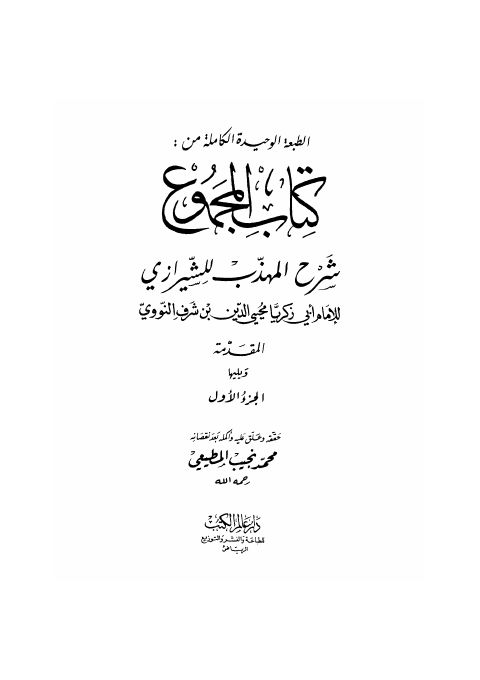

Downloads need an internet connection.
كتاب المجموع شرح المهذب للشيرازي
Authors: يحيى بن شرف النووي
Editors: محمد نجيب المطيعي
Publishers: دار عالم الكتب للطباعة والنشر والتوزيع
**▫️ العنوان: كتاب المجموع شرح المهذب للشيرازي** ▪️ المؤلف: #يحيى_بن_شرف_النووي ▫️ المحقق: #محمد_نجيب_المطيعي ▪️ الناشر: #دار_عالم_الكتب ▫️ تاريخ النشر: 1427هـ 2016م ▪️ بلد النشر: الرياض، #السعودية ▫️ الطبعة: 2 ▪️ عدد الأجزاء: 23 ▫️ نوع الوعاء: #كتاب ▪️ التصنيف الرئيسي: #الفقه_وأصوله ۪